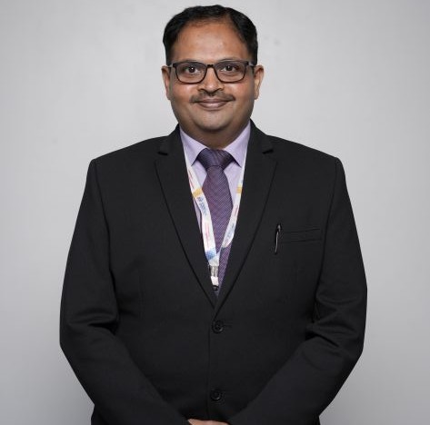

Prof. Kaustubh Arvind Sontakke
Associate Professor

Associate Professor
Dr. Kaustubh Arvind Sontakke is the Associate Professor at The School of Business, MIT World Peace University. He is a teacher and researcher with more than 22 years’ rich experience in the field of management and finance. He has completed two doctorate / Ph.D. degrees. He holds Ph.D. (Business Management) and Ph.D. (Accountancy) from University of Mumbai. He is M. Phil (Finance) and Gold Medallist for M. Com (Accounts and Finance) from the University of Mumbai. Also, he has completed an MBA (Finance) and MA (Economics) and MBA (HRM). He has authored twelve books and various research papers in the field of accounting and finance. He has attended and chaired many technical sessions in national and international conferences. He is Life Member of Indian Accounting Association and a Life Member of Higher Education Forum. He has his special devotional interest in Bhagavad Gita studies. He is Elite Life Member of International Society for Krsna Consciousness (ISKCON).
Profiles